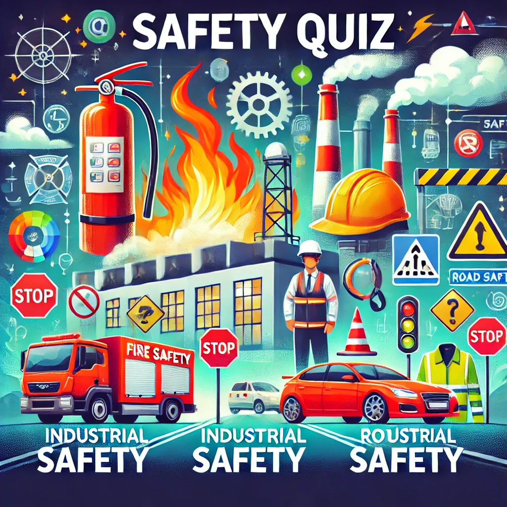
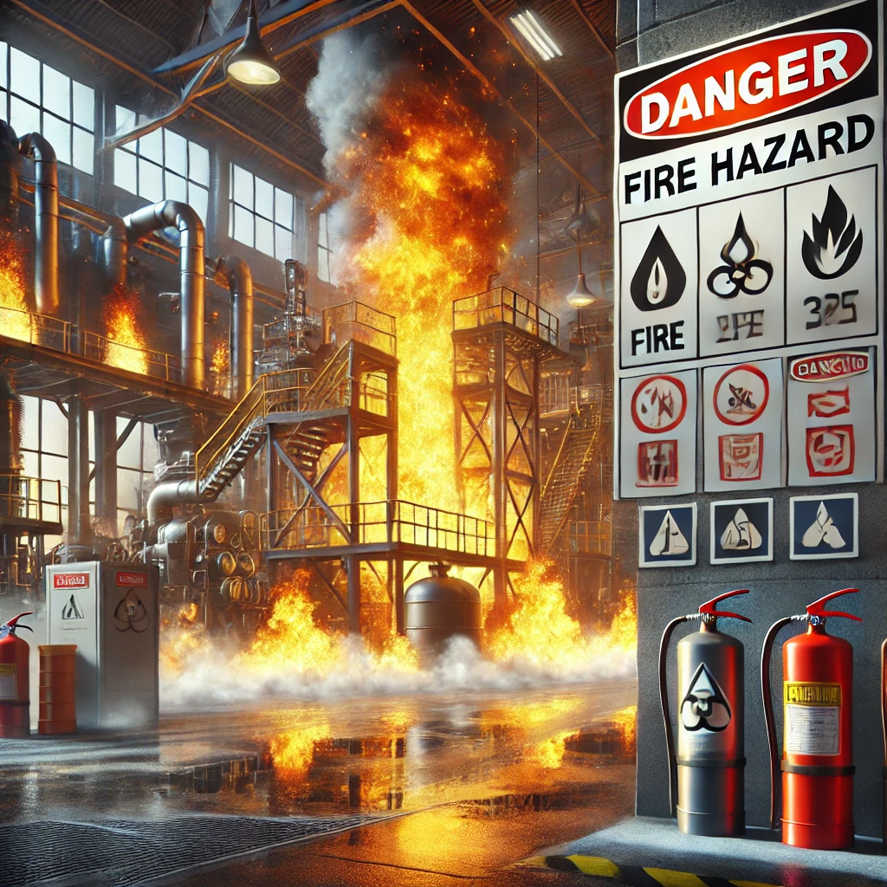
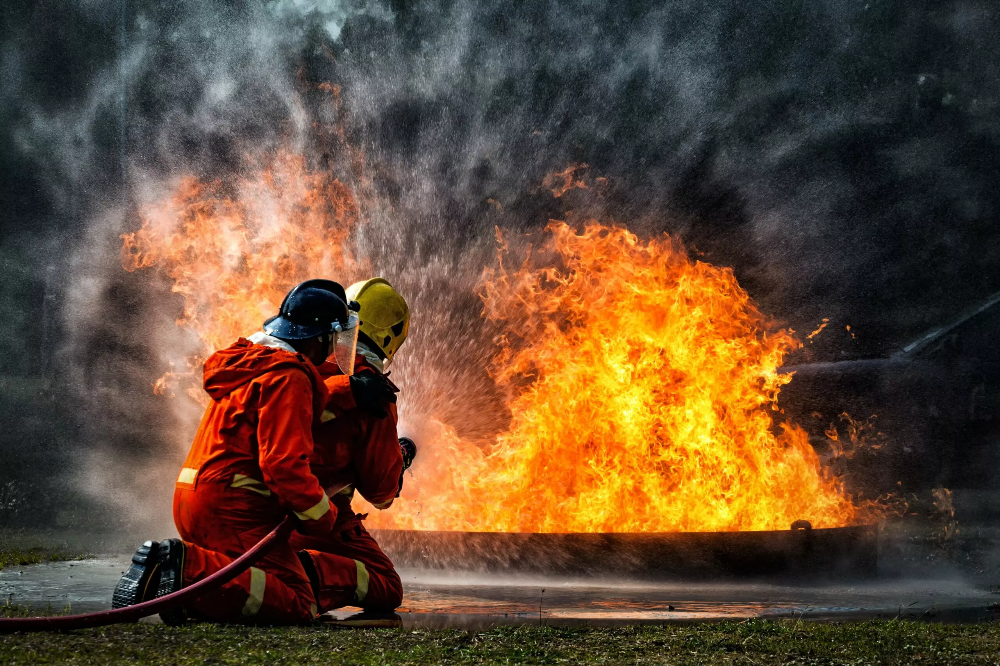

Bienvenue dans notre
QUIZ


Si vous souhaitez tester vos connaissances dans différents domaines, pourquoi ne pas explorer le thème de la sécurité incendie et industrielle ?
Lancez-vous dans un quiz captivant pour évaluer votre compréhension des protocoles de prévention, des équipements de protection, ou encore des mesures à adopter face à des situations d'urgence
Que ce soit la manipulation des matières dangereuses, la gestion des risques d'explosion, ou l'organisation des évacuations en cas d'incendie, ce quiz vous permettra de mieux appréhender les défis de la sécurité en milieu industriel. À vous de jouer !
La Sécurité au Quotidien : Prévention des Risques Incendie, Industriels et Routiers
À l’adolescence, il est parfois difficile de prendre pleinement conscience des dangers qui nous entourent. Bien souvent, nous sommes absorbés par des activités qui, bien qu'intéressantes, ne nous préparent pas aux risques que nous pouvons rencontrer dans la vie quotidienne. Pourtant, comprendre et maîtriser les enjeux de la sécurité est essentiel. C’est dans cette optique que le Quiz de la Sécurité a été conçu : pour informer les jeunes sur les risques d’incendie à la maison, les dangers industriels auxquels nous sommes tous exposés, et les règles de sécurité routière à respecter pour éviter les accidents. Ce quiz vise à sensibiliser chacun à l’importance de prévenir ces risques et à adopter les comportements responsables qui nous protègent au quotidien.
La sécurité incendie est essentielle pour prévenir les risques d'incendie et protéger les vies humaines et les biens.
Elle comprend des mesures telles que l'installation de détecteurs de fumée, d'extincteurs et l'éducation des personnes à l'évacuation.
Les incendies peuvent avoir des conséquences graves, donc une préparation adéquate permet de limiter les dégâts et de sauver des vies.
Des réglementations strictes sont mises en place pour assurer la sécurité dans tous les types de bâtiments.

La sécurité industrielle est primordiale pour prévenir les accidents de travail et protéger la santé des employés ainsi que les installations.
Elle inclut des mesures telles que l'installation de systèmes de surveillance, la formation des travailleurs aux risques spécifiques et la mise en place de procédures d'urgence.
Les incidents industriels peuvent entraîner des conséquences graves, tant sur le plan humain qu'environnemental, d'où l'importance d'une vigilance constante et d'une gestion rigoureuse des risques.
Des normes strictes sont en vigueur pour garantir la sécurité dans les industries, notamment celles liées à la manipulation de substances dangereuses et à l'utilisation d'équipements complexes.
La sécurité routière est essentielle pour prévenir les accidents de la route et garantir la protection des conducteurs, des passagers ainsi que des piétons.
Elle comprend des mesures telles que la signalisation routière claire, le respect des règles de circulation, l'entretien des infrastructures et la sensibilisation des usagers à la sécurité. Des campagnes de prévention sont régulièrement menées pour rappeler les comportements à adopter, comme la vitesse adaptée, le port de la ceinture de sécurité et l'usage de l'équipement de protection.
Les accidents de la route peuvent avoir des conséquences dramatiques, tant sur le plan humain qu'environnemental, d'où l'importance d'une vigilance constante et d'une responsabilisation de chaque conducteur.
Des normes strictes sont en place pour encadrer les conditions de conduite, notamment celles relatives à l'alcool au volant, la conduite sous l'emprise de drogues et l'entretien des véhicules.